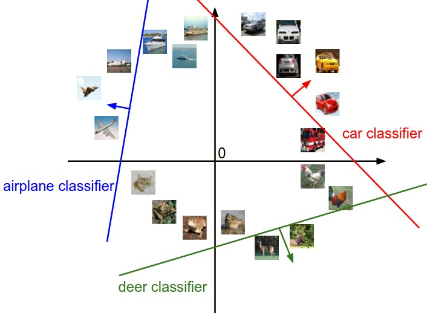
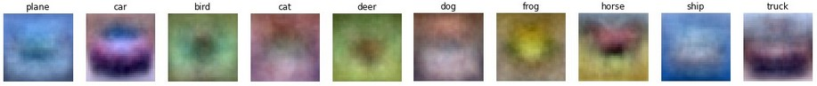
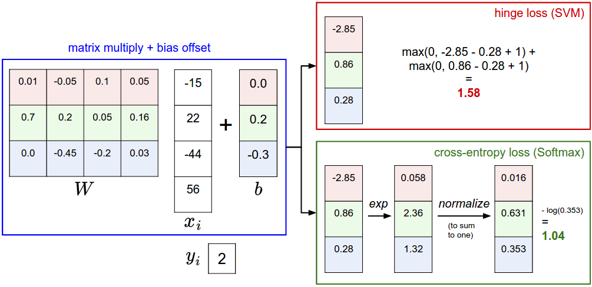
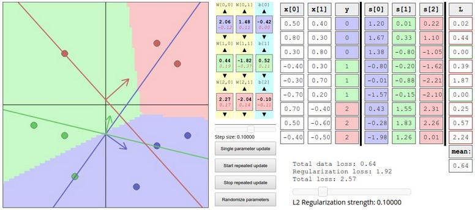

Classificação de imagens
⚠️ Este conteúdo é uma tradução para português, gerada automaticamente por IA, a partir do material original em inglês do curso CS231n (Stanford University). Consulte os links "Fonte original" abaixo de cada seção para o texto original.
Fonte original (inglês): Image Classification · CS231n, Stanford University ↗
Classificação de Imagens
Esta é uma aula introdutória, pensada para apresentar pessoas de fora da área de Visão Computacional ao problema de Classificação de Imagens e à abordagem orientada a dados. Sumário:
Motivação. Nesta seção vamos apresentar o problema de Classificação de Imagens, que é a tarefa de atribuir a uma imagem de entrada um rótulo dentre um conjunto fixo de categorias. Este é um dos problemas centrais em Visão Computacional que, apesar de sua simplicidade, tem uma grande variedade de aplicações práticas. Além disso, como veremos mais adiante no curso, muitas outras tarefas de Visão Computacional aparentemente distintas (como detecção de objetos e segmentação) podem ser reduzidas à classificação de imagens.
Exemplo. Por exemplo, na imagem abaixo, um modelo de classificação de imagens recebe uma única imagem e atribui probabilidades a 4 rótulos, {gato, cachorro, chapéu, caneca}. Como mostrado na imagem, tenha em mente que, para um computador, uma imagem é representada como um grande array tridimensional de números. Neste exemplo, a imagem do gato tem 248 pixels de largura, 400 pixels de altura e três canais de cor — vermelho, verde e azul (ou RGB, do inglês). Portanto, a imagem consiste em 248 x 400 x 3 números, ou um total de 297.600 números. Cada número é um inteiro que varia de 0 (preto) a 255 (branco). Nossa tarefa é transformar esse quarto de milhão de números em um único rótulo, como "gato".

Desafios. Como a tarefa de reconhecer um conceito visual (por exemplo, gato) é relativamente trivial para um ser humano, vale a pena considerar os desafios envolvidos do ponto de vista de um algoritmo de Visão Computacional. Ao apresentarmos abaixo uma lista (não exaustiva) de desafios, tenha em mente a representação bruta das imagens como um array 3D de valores de brilho:
- Variação de ponto de vista. Uma única instância de um objeto pode estar orientada de muitas formas em relação à câmera.
- Variação de escala. Classes visuais costumam variar em tamanho (tamanho no mundo real, não apenas em termos de sua extensão na imagem).
- Deformação. Muitos objetos de interesse não são corpos rígidos e podem se deformar de formas extremas.
- Oclusão. Os objetos de interesse podem estar ocluídos. Às vezes apenas uma pequena parte de um objeto (tão pouco quanto alguns pixels) pode estar visível.
- Condições de iluminação. Os efeitos da iluminação são drásticos no nível do pixel.
- Desordem de fundo (background clutter). Os objetos de interesse podem se misturar com o ambiente, tornando-os difíceis de identificar.
- Variação intraclasse. As classes de interesse muitas vezes são relativamente amplas, como cadeira. Há muitos tipos diferentes desses objetos, cada um com sua própria aparência.
Um bom modelo de classificação de imagens precisa ser invariante ao produto cartesiano de todas essas variações, enquanto simultaneamente mantém sensibilidade às variações entre classes.

Abordagem orientada a dados. Como poderíamos escrever um algoritmo capaz de classificar imagens em categorias distintas? Diferente de escrever um algoritmo para, por exemplo, ordenar uma lista de números, não é óbvio como se escreveria um algoritmo para identificar gatos em imagens. Portanto, em vez de tentar especificar diretamente em código a aparência de cada uma das categorias de interesse, a abordagem que vamos seguir não é muito diferente da que se tomaria com uma criança: vamos fornecer ao computador muitos exemplos de cada classe e então desenvolver algoritmos de aprendizado que observam esses exemplos e aprendem sobre a aparência visual de cada classe. Essa abordagem é chamada de abordagem orientada a dados, já que depende, primeiro, de acumular um conjunto de treinamento de imagens rotuladas. Eis um exemplo de como esse conjunto de dados poderia ser:

O pipeline de classificação de imagens. Já vimos que a tarefa em Classificação de Imagens é receber um array de pixels que representa uma única imagem e atribuir-lhe um rótulo. Nosso pipeline completo pode ser formalizado da seguinte forma:
- Entrada: nossa entrada consiste em um conjunto de N imagens, cada uma rotulada com uma dentre K classes diferentes. Chamamos esses dados de conjunto de treinamento.
- Aprendizado: nossa tarefa é usar o conjunto de treinamento para aprender como é a aparência de cada uma das classes. Chamamos essa etapa de treinar um classificador, ou aprender um modelo.
- Avaliação: por fim, avaliamos a qualidade do classificador pedindo que ele preveja rótulos para um novo conjunto de imagens que nunca viu antes. Em seguida, comparamos os rótulos verdadeiros dessas imagens com os previstos pelo classificador. Intuitivamente, esperamos que muitas das previsões coincidam com as respostas verdadeiras (que chamamos de ground truth, ou verdade de referência).
Classificador do Vizinho Mais Próximo
Como nossa primeira abordagem, vamos desenvolver o que chamamos de Classificador do Vizinho Mais Próximo (Nearest Neighbor Classifier). Esse classificador não tem nenhuma relação com Redes Neurais Convolucionais e é muito raramente usado na prática, mas vai nos permitir ter uma ideia da abordagem básica a um problema de classificação de imagens.
Conjunto de dados de exemplo: CIFAR-10. Um conjunto de dados de brinquedo (toy dataset) popular para classificação de imagens é o conjunto de dados CIFAR-10. Esse conjunto consiste em 60.000 imagens pequenas, de 32 pixels de altura e largura. Cada imagem é rotulada com uma dentre 10 classes (por exemplo, "avião, automóvel, pássaro, etc."). Essas 60.000 imagens são divididas em um conjunto de treinamento de 50.000 imagens e um conjunto de teste de 10.000 imagens. Na imagem abaixo você pode ver 10 exemplos aleatórios de cada uma das 10 classes:

Suponha agora que nos é dado o conjunto de treinamento do CIFAR-10 com 50.000 imagens (5.000 imagens para cada um dos rótulos), e desejamos rotular as 10.000 restantes. O classificador do vizinho mais próximo pega uma imagem de teste, compara-a com cada uma das imagens de treinamento e prevê o rótulo da imagem de treinamento mais próxima. Na imagem acima, à direita, você pode ver um exemplo do resultado desse procedimento para 10 imagens de teste. Note que em apenas cerca de 3 dos 10 exemplos uma imagem da mesma classe é recuperada, enquanto nos outros 7 exemplos isso não acontece. Por exemplo, na 8ª linha, a imagem de treinamento mais próxima da cabeça de cavalo é um carro vermelho, presumivelmente por causa do fundo preto forte. Como resultado, essa imagem de um cavalo seria, nesse caso, rotulada incorretamente como um carro.
Você deve ter notado que deixamos sem especificar os detalhes de exatamente como comparamos duas imagens, que nesse caso são apenas dois blocos de 32 x 32 x 3. Uma das possibilidades mais simples é comparar as imagens pixel a pixel e somar todas as diferenças. Em outras palavras, dadas duas imagens e representando-as como vetores \( I_1, I_2 \), uma escolha razoável para compará-las poderia ser a distância L1:
$$ d_1 (I_1, I_2) = \sum_{p} \left| I^p_1 - I^p_2 \right| $$
Onde a soma é feita sobre todos os pixels. Aqui está o procedimento visualizado:

Vamos também ver como poderíamos implementar o classificador em código. Primeiro, vamos carregar os dados do CIFAR-10 na memória como 4 arrays: os dados/rótulos de treinamento e os dados/rótulos de teste. No código abaixo, Xtr (de tamanho 50.000 x 32 x 32 x 3) contém todas as imagens do conjunto de treinamento, e um array unidimensional correspondente Ytr (de comprimento 50.000) contém os rótulos de treinamento (de 0 a 9):
Xtr, Ytr, Xte, Yte = load_CIFAR10('data/cifar10/') # uma função mágica que fornecemos
# achata todas as imagens para serem unidimensionais
Xtr_rows = Xtr.reshape(Xtr.shape[0], 32 * 32 * 3) # Xtr_rows vira 50000 x 3072
Xte_rows = Xte.reshape(Xte.shape[0], 32 * 32 * 3) # Xte_rows vira 10000 x 3072Agora que temos todas as imagens esticadas como linhas, veja como poderíamos treinar e avaliar um classificador:
nn = NearestNeighbor() # cria a classe do classificador Vizinho Mais Próximo
nn.train(Xtr_rows, Ytr) # treina o classificador nas imagens e rótulos de treinamento
Yte_predict = nn.predict(Xte_rows) # prevê os rótulos nas imagens de teste
# e agora imprime a acurácia da classificação, que é o número médio
# de exemplos corretamente previstos (i.e. rótulo bate)
print 'accuracy: %f' % ( np.mean(Yte_predict == Yte) )Note que, como critério de avaliação, é comum usar a acurácia, que mede a fração de previsões que estavam corretas. Note que todos os classificadores que vamos construir satisfazem esta API comum: eles têm uma função train(X,y) que recebe os dados e os rótulos com os quais aprender. Internamente, a classe deve construir algum tipo de modelo dos rótulos e de como eles podem ser previstos a partir dos dados. E então há uma função predict(X), que recebe novos dados e prevê os rótulos. É claro que deixamos de fora a parte principal — o classificador em si. Eis uma implementação de um classificador simples do Vizinho Mais Próximo com a distância L1 que satisfaz esse modelo:
import numpy as np
class NearestNeighbor(object):
def __init__(self):
pass
def train(self, X, y):
""" X é N x D, onde cada linha é um exemplo. Y é 1-dimensional, de tamanho N """
# o classificador do vizinho mais próximo simplesmente memoriza todos os dados de treinamento
self.Xtr = X
self.ytr = y
def predict(self, X):
""" X é N x D, onde cada linha é um exemplo para o qual queremos prever o rótulo """
num_test = X.shape[0]
# garante que o tipo de saída bate com o tipo de entrada
Ypred = np.zeros(num_test, dtype = self.ytr.dtype)
# percorre todas as linhas de teste
for i in range(num_test):
# encontra a imagem de treinamento mais próxima da i-ésima imagem de teste
# usando a distância L1 (soma das diferenças em valor absoluto)
distances = np.sum(np.abs(self.Xtr - X[i,:]), axis = 1)
min_index = np.argmin(distances) # pega o índice com a menor distância
Ypred[i] = self.ytr[min_index] # prevê o rótulo do exemplo mais próximo
return YpredSe você rodasse esse código, veria que esse classificador atinge apenas 38,6% no CIFAR-10. Isso é mais impressionante do que adivinhar aleatoriamente (o que daria 10% de acurácia, já que há 10 classes), mas está longe do desempenho humano (que é estimado em cerca de 94%) ou perto do estado da arte em Redes Neurais Convolucionais, que atingem cerca de 95%, equiparando-se à acurácia humana (veja o ranking de uma competição recente do Kaggle sobre o CIFAR-10).
A escolha da distância. Há muitas outras formas de calcular distâncias entre vetores. Outra escolha comum poderia ser usar a distância L2, que tem a interpretação geométrica de calcular a distância euclidiana entre dois vetores. A distância tem a forma:
$$ d_2 (I_1, I_2) = \sqrt{\sum_{p} \left( I^p_1 - I^p_2 \right)^2} $$
Em outras palavras, estaríamos calculando a diferença pixel a pixel como antes, mas dessa vez elevamos todas ao quadrado, somamos e, por fim, tiramos a raiz quadrada. Em numpy, usando o código acima, precisaríamos substituir apenas uma única linha de código. A linha que calcula as distâncias:
distances = np.sqrt(np.sum(np.square(self.Xtr - X[i,:]), axis = 1))Note que incluí a chamada np.sqrt acima, mas, em uma aplicação prática do vizinho mais próximo, poderíamos deixar de fora a operação de raiz quadrada, porque a raiz quadrada é uma função monótona. Ou seja, ela escala os tamanhos absolutos das distâncias, mas preserva a ordenação, de modo que os vizinhos mais próximos com ou sem ela são idênticos. Se você rodasse o classificador do Vizinho Mais Próximo no CIFAR-10 com essa distância, obteria 35,4% de acurácia (ligeiramente inferior ao resultado com a distância L1).
L1 vs. L2. É interessante considerar as diferenças entre as duas métricas. Em particular, a distância L2 é muito menos tolerante do que a distância L1 quando se trata de diferenças entre dois vetores. Ou seja, a distância L2 prefere muitos desacordos medianos a um único grande. As distâncias L1 e L2 (ou, de forma equivalente, as normas L1/L2 das diferenças entre um par de imagens) são os casos especiais mais comumente usados de uma p-norma.
Classificador k-Vizinhos Mais Próximos
Você deve ter notado que é estranho usar apenas o rótulo da imagem mais próxima quando queremos fazer uma previsão. De fato, é quase sempre o caso que se pode fazer melhor usando o chamado classificador k-Vizinhos Mais Próximos (k-Nearest Neighbor). A ideia é bem simples: em vez de encontrar a única imagem mais próxima no conjunto de treinamento, vamos encontrar as k imagens mais próximas e fazê-las votar no rótulo da imagem de teste. Em particular, quando k = 1, recuperamos o classificador do Vizinho Mais Próximo. Intuitivamente, valores maiores de k têm um efeito de suavização que torna o classificador mais resistente a outliers:

Na prática, você quase sempre vai querer usar o k-Vizinhos Mais Próximos. Mas que valor de k usar? É a esse problema que vamos nos voltar a seguir.
Conjuntos de validação para ajuste de hiperparâmetros
O classificador k-vizinhos mais próximos exige uma configuração para k. Mas qual número funciona melhor? Além disso, vimos que há muitas funções de distância diferentes que poderíamos ter usado: norma L1, norma L2, e há muitas outras escolhas que nem sequer consideramos (por exemplo, produtos internos). Essas escolhas são chamadas de hiperparâmetros e aparecem com bastante frequência no projeto de muitos algoritmos de Aprendizado de Máquina que aprendem a partir de dados. Muitas vezes não é óbvio quais valores/configurações se deve escolher.
Você pode ficar tentado a sugerir que devemos testar muitos valores diferentes e ver o que funciona melhor. Essa é uma boa ideia, e é de fato o que faremos, mas isso precisa ser feito com muito cuidado. Em particular, não podemos usar o conjunto de teste para fins de ajustar hiperparâmetros. Sempre que você estiver projetando algoritmos de Aprendizado de Máquina, deve pensar no conjunto de teste como um recurso muito precioso, que idealmente nunca deve ser tocado até uma única vez, no final. Caso contrário, o perigo muito real é que você pode ajustar seus hiperparâmetros para funcionar bem no conjunto de teste mas, se fosse implantar seu modelo, poderia ver um desempenho significativamente reduzido. Na prática, diríamos que você sobreajustou (overfit) ao conjunto de teste. Outra forma de ver isso é que, se você ajusta seus hiperparâmetros no conjunto de teste, está efetivamente usando o conjunto de teste como conjunto de treinamento e, portanto, o desempenho que você obtém nele será otimista demais em relação ao que você realmente observaria ao implantar seu modelo. Mas se você usar o conjunto de teste apenas uma vez, no final, ele continua sendo um bom proxy para medir a generalização do seu classificador (veremos muito mais discussão sobre generalização mais adiante no curso).
Avalie no conjunto de teste apenas uma única vez, bem no final.
Felizmente, existe uma forma correta de ajustar os hiperparâmetros e que não toca no conjunto de teste. A ideia é dividir nosso conjunto de treinamento em dois: um conjunto de treinamento um pouco menor e o que chamamos de conjunto de validação. Usando o CIFAR-10 como exemplo, poderíamos, por exemplo, usar 49.000 das imagens de treinamento para treinar e deixar 1.000 de lado para validação. Esse conjunto de validação é essencialmente usado como um falso conjunto de teste para ajustar os hiperparâmetros.
Veja como isso poderia ser no caso do CIFAR-10:
# suponha que já temos Xtr_rows, Ytr, Xte_rows, Yte como antes
# lembre que Xtr_rows é uma matriz 50.000 x 3072
Xval_rows = Xtr_rows[:1000, :] # pega as primeiras 1000 para validação
Yval = Ytr[:1000]
Xtr_rows = Xtr_rows[1000:, :] # mantém as últimas 49.000 para treino
Ytr = Ytr[1000:]
# encontra os hiperparâmetros que funcionam melhor no conjunto de validação
validation_accuracies = []
for k in [1, 3, 5, 10, 20, 50, 100]:
# usa um valor particular de k e avalia nos dados de validação
nn = NearestNeighbor()
nn.train(Xtr_rows, Ytr)
# aqui assumimos uma classe NearestNeighbor modificada que aceita k como entrada
Yval_predict = nn.predict(Xval_rows, k = k)
acc = np.mean(Yval_predict == Yval)
print 'accuracy: %f' % (acc,)
# guarda o que funciona no conjunto de validação
validation_accuracies.append((k, acc))Ao final desse procedimento, poderíamos plotar um gráfico que mostra quais valores de k funcionam melhor. Então ficaríamos com esse valor e avaliaríamos uma única vez no conjunto de teste de fato.
Divida seu conjunto de treinamento em conjunto de treinamento e um conjunto de validação. Use o conjunto de validação para ajustar todos os hiperparâmetros. No final, rode uma única vez no conjunto de teste e relate o desempenho.
Validação cruzada. Nos casos em que o tamanho dos seus dados de treinamento (e, portanto, também dos dados de validação) pode ser pequeno, às vezes as pessoas usam uma técnica mais sofisticada para ajuste de hiperparâmetros, chamada validação cruzada. Retomando nosso exemplo anterior, a ideia é que, em vez de escolher arbitrariamente os primeiros 1000 pontos de dados como conjunto de validação e o resto como treinamento, você pode obter uma estimativa melhor e menos ruidosa de quão bem certo valor de k funciona iterando sobre diferentes conjuntos de validação e tirando a média do desempenho entre eles. Por exemplo, em validação cruzada de 5 partições (5-fold), dividiríamos os dados de treinamento em 5 partições iguais, usaríamos 4 delas para treinamento e 1 para validação. Em seguida, iteraríamos sobre qual partição é a de validação, avaliaríamos o desempenho e, por fim, tiraríamos a média do desempenho entre as diferentes partições.

Na prática. Na prática, as pessoas preferem evitar a validação cruzada em favor de ter uma única divisão de validação, já que a validação cruzada pode ser computacionalmente cara. As divisões que costumam ser usadas ficam entre 50%-90% dos dados de treinamento para treino, e o resto para validação. No entanto, isso depende de múltiplos fatores: por exemplo, se o número de hiperparâmetros é grande, você pode preferir usar divisões de validação maiores. Se o número de exemplos no conjunto de validação é pequeno (talvez apenas algumas centenas), é mais seguro usar validação cruzada. Números típicos de partições que se veem na prática seriam validação cruzada de 3, 5 ou 10 partições.

Vantagens e desvantagens do classificador do Vizinho Mais Próximo.
Vale a pena considerar algumas vantagens e desvantagens do classificador do Vizinho Mais Próximo. Claramente, uma vantagem é que ele é muito simples de implementar e entender. Além disso, o classificador não leva tempo algum para treinar, já que tudo o que é necessário é armazenar e, possivelmente, indexar os dados de treinamento. No entanto, pagamos esse custo computacional no momento do teste, já que classificar um exemplo de teste exige uma comparação com cada um dos exemplos de treinamento. Isso é ao contrário do desejável, já que, na prática, muitas vezes nos importamos muito mais com a eficiência no momento do teste do que com a eficiência no momento do treinamento. Na verdade, as redes neurais profundas que vamos desenvolver mais adiante neste curso deslocam esse compromisso para o outro extremo: são muito caras de treinar, mas, uma vez concluído o treinamento, é muito barato classificar um novo exemplo de teste. Esse modo de operação é muito mais desejável na prática.
Como observação à parte, a complexidade computacional do classificador do Vizinho Mais Próximo é uma área ativa de pesquisa, e existem vários algoritmos e bibliotecas de Vizinho Mais Próximo Aproximado (ANN) que podem acelerar a busca do vizinho mais próximo em um conjunto de dados (por exemplo, FLANN). Esses algoritmos permitem trocar a exatidão da recuperação do vizinho mais próximo por sua complexidade de espaço/tempo durante a recuperação, e costumam depender de uma etapa de pré-processamento/indexação que envolve construir uma kdtree, ou rodar o algoritmo k-means.
O Classificador do Vizinho Mais Próximo às vezes pode ser uma boa escolha em alguns cenários (especialmente se os dados forem de baixa dimensionalidade), mas raramente é apropriado para uso em cenários práticos de classificação de imagens. Um problema é que imagens são objetos de alta dimensionalidade (i.e. costumam conter muitos pixels), e distâncias em espaços de alta dimensionalidade podem ser muito contraintuitivas. A imagem abaixo ilustra o ponto de que as similaridades L2 baseadas em pixels que desenvolvemos acima são muito diferentes das similaridades perceptuais:

Aqui está mais uma visualização para convencê-lo de que usar diferenças de pixels para comparar imagens é inadequado. Podemos usar uma técnica de visualização chamada t-SNE para pegar as imagens do CIFAR-10 e projetá-las em duas dimensões, de forma que suas distâncias par a par (locais) sejam melhor preservadas. Nessa visualização, imagens mostradas próximas são consideradas muito próximas de acordo com a distância L2 de pixels que desenvolvemos acima:
Em particular, note que as imagens próximas umas das outras são muito mais uma função da distribuição geral de cores das imagens, ou do tipo de fundo, do que de sua identidade semântica. Por exemplo, um cachorro pode ser visto bem perto de um sapo, já que ambos por acaso estão sobre um fundo branco. Idealmente, gostaríamos que imagens de todas as 10 classes formassem seus próprios agrupamentos, de forma que imagens da mesma classe fiquem próximas umas das outras, independentemente de características e variações irrelevantes (como o fundo). No entanto, para obter essa propriedade, teremos que ir além dos pixels brutos.
Resumo
Em resumo:
- Apresentamos o problema de Classificação de Imagens, no qual nos é dado um conjunto de imagens, todas rotuladas com uma única categoria. Em seguida, somos solicitados a prever essas categorias para um novo conjunto de imagens de teste e medir a acurácia das previsões.
- Apresentamos um classificador simples chamado classificador do Vizinho Mais Próximo. Vimos que há múltiplos hiperparâmetros (como o valor de k, ou o tipo de distância usada para comparar exemplos) associados a esse classificador e que não havia uma forma óbvia de escolhê-los.
- Vimos que a forma correta de definir esses hiperparâmetros é dividir seus dados de treinamento em dois: um conjunto de treinamento e um falso conjunto de teste, que chamamos de conjunto de validação. Testamos diferentes valores de hiperparâmetros e mantemos os valores que levam ao melhor desempenho no conjunto de validação.
- Se a falta de dados de treinamento é uma preocupação, discutimos um procedimento chamado validação cruzada, que pode ajudar a reduzir o ruído na estimativa de quais hiperparâmetros funcionam melhor.
- Uma vez encontrados os melhores hiperparâmetros, nós os fixamos e realizamos uma única avaliação no conjunto de teste de fato.
- Vimos que o Vizinho Mais Próximo pode nos dar cerca de 40% de acurácia no CIFAR-10. É simples de implementar, mas exige que armazenemos todo o conjunto de treinamento, e é caro de avaliar em uma imagem de teste.
- Por fim, vimos que o uso de distâncias L1 ou L2 sobre valores brutos de pixels não é adequado, já que as distâncias se correlacionam mais fortemente com fundos e distribuições de cor das imagens do que com seu conteúdo semântico.
Nas próximas aulas, vamos embarcar no enfrentamento desses desafios e, eventualmente, chegar a soluções que dão 90% de acurácia, nos permitem descartar completamente o conjunto de treinamento uma vez concluído o aprendizado, e nos permitirão avaliar uma imagem de teste em menos de um milissegundo.
Resumo: aplicando o kNN na prática
Se você deseja aplicar o kNN na prática (esperançosamente não em imagens, ou talvez apenas como uma referência de base), proceda da seguinte forma:
- Pré-processe seus dados: normalize as características dos seus dados (por exemplo, um pixel em imagens) para terem média zero e variância unitária. Cobriremos isso em mais detalhes em seções posteriores, e optamos por não cobrir a normalização de dados nesta seção porque os pixels em imagens costumam ser homogêneos e não apresentam distribuições muito diferentes, o que reduz a necessidade de normalização de dados.
- Se os seus dados forem de dimensionalidade muito alta, considere usar uma técnica de redução de dimensionalidade, como PCA (wiki, notas do CS229, blog), NCA (wiki, blog), ou até mesmo Projeções Aleatórias.
- Divida seus dados de treinamento aleatoriamente em divisões de treino/validação. Como regra geral, entre 70-90% dos seus dados costumam ir para a divisão de treino. Essa configuração depende de quantos hiperparâmetros você tem e de quanta influência você espera que eles tenham. Se houver muitos hiperparâmetros a estimar, você deve preferir ter conjuntos de validação maiores para estimá-los de forma eficaz. Se você estiver preocupado com o tamanho dos seus dados de validação, o melhor é dividir os dados de treinamento em partições e realizar validação cruzada. Se você puder arcar com o orçamento computacional, é sempre mais seguro optar pela validação cruzada (quanto mais partições, melhor, mas mais cara).
- Treine e avalie o classificador kNN nos dados de validação (para todas as partições, se estiver fazendo validação cruzada) para muitas escolhas de k (por exemplo, quanto mais, melhor) e entre diferentes tipos de distância (L1 e L2 são boas candidatas).
- Se o seu classificador kNN estiver demorando demais para rodar, considere usar uma biblioteca de Vizinho Mais Próximo Aproximado (por exemplo, FLANN) para acelerar a recuperação (ao custo de alguma acurácia).
- Anote os hiperparâmetros que deram os melhores resultados. Há a questão de se você deveria usar o conjunto de treinamento completo com os melhores hiperparâmetros, já que os hiperparâmetros ótimos poderiam mudar se você incorporasse os dados de validação ao seu treinamento (já que o tamanho dos dados seria maior). Na prática, é mais limpo não usar os dados de validação no classificador final e considerá-los consumidos na estimativa dos hiperparâmetros. Avalie o melhor modelo no conjunto de teste. Relate a acurácia no conjunto de teste e declare o resultado como o desempenho do classificador kNN nos seus dados.
Leitura complementar
Aqui estão alguns links (opcionais) que você pode achar interessantes para leitura complementar:
- A Few Useful Things to Know about Machine Learning, onde a seção 6, em especial, é relevante, mas o artigo inteiro é uma leitura calorosamente recomendada.
- Recognizing and Learning Object Categories, um curso curto sobre categorização de objetos, do ICCV 2005.
Fonte original (inglês): Linear Classification · CS231n, Stanford University ↗
Classificação Linear
Na seção anterior, apresentamos o problema de Classificação de Imagens, que é a tarefa de atribuir a uma imagem um único rótulo dentre um conjunto fixo de categorias. Além disso, descrevemos o classificador k-Vizinhos Mais Próximos (kNN), que rotula imagens comparando-as com imagens (anotadas) do conjunto de treinamento. Como vimos, o kNN tem uma série de desvantagens:
- O classificador precisa memorizar todos os dados de treinamento e armazená-los para comparações futuras com os dados de teste. Isso é ineficiente em termos de espaço, porque os conjuntos de dados podem facilmente ter gigabytes de tamanho.
- Classificar uma imagem de teste é caro, já que exige uma comparação com todas as imagens de treinamento.
Visão geral. Vamos agora desenvolver uma abordagem mais poderosa para classificação de imagens, que eventualmente vamos estender naturalmente para Redes Neurais completas e Redes Neurais Convolucionais. A abordagem terá dois componentes principais: uma função de pontuação (score function), que mapeia os dados brutos para pontuações de classe, e uma função de perda (loss function), que quantifica a concordância entre as pontuações previstas e os rótulos verdadeiros. Vamos então formular isso como um problema de otimização, no qual minimizaremos a função de perda em relação aos parâmetros da função de pontuação.
Mapeamento parametrizado de imagens para pontuações de classe
O primeiro componente dessa abordagem é definir a função de pontuação que mapeia os valores de pixel de uma imagem para pontuações de confiança de cada classe. Vamos desenvolver a abordagem com um exemplo concreto. Como antes, vamos assumir um conjunto de dados de treinamento de imagens \( x_i \in R^D \), cada uma associada a um rótulo \( y_i \). Aqui \( i = 1 \dots N \) e \( y_i \in \{ 1 \dots K \} \). Ou seja, temos N exemplos (cada um com dimensionalidade D) e K categorias distintas. Por exemplo, no CIFAR-10 temos um conjunto de treinamento de N = 50.000 imagens, cada uma com D = 32 x 32 x 3 = 3072 pixels, e K = 10, já que há 10 classes distintas (cachorro, gato, carro, etc.). Vamos agora definir a função de pontuação \(f: R^D \mapsto R^K\) que mapeia os pixels brutos da imagem para pontuações de classe.
Classificador linear. Neste módulo, vamos começar com, seguramente, a função mais simples possível: um mapeamento linear:
$$ f(x_i, W, b) = W x_i + b $$
Na equação acima, estamos assumindo que a imagem \(x_i\) tem todos os seus pixels achatados em um único vetor-coluna, de formato [D x 1]. A matriz W (de tamanho [K x D]) e o vetor b (de tamanho [K x 1]) são os parâmetros da função. No CIFAR-10, \(x_i\) contém todos os pixels da i-ésima imagem achatados em uma única coluna [3072 x 1], W é [10 x 3072] e b é [10 x 1], então 3072 números entram na função (os valores brutos dos pixels) e 10 números saem (as pontuações de classe). Os parâmetros em W costumam ser chamados de pesos, e b é chamado de vetor de viés (bias), porque influencia as pontuações de saída, mas sem interagir com os dados propriamente ditos, \(x_i\). No entanto, você frequentemente vai ouvir as pessoas usarem os termos pesos e parâmetros de forma intercambiável.
Há algumas coisas a observar:
- Primeiro, note que a única multiplicação de matrizes \(W x_i\) está, na prática, avaliando 10 classificadores separados em paralelo (um para cada classe), onde cada classificador é uma linha de W.
- Note também que pensamos nos dados de entrada \( (x_i, y_i) \) como dados e fixos, mas temos controle sobre a configuração dos parâmetros W,b. Nosso objetivo será defini-los de forma que as pontuações calculadas correspondam aos rótulos verdadeiros em todo o conjunto de treinamento. Vamos entrar em muito mais detalhes sobre como isso é feito, mas, intuitivamente, desejamos que a classe correta tenha uma pontuação mais alta que as pontuações das classes incorretas.
- Uma vantagem dessa abordagem é que os dados de treinamento são usados para aprender os parâmetros W,b, mas, uma vez concluído o aprendizado, podemos descartar todo o conjunto de treinamento e manter apenas os parâmetros aprendidos. Isso porque uma nova imagem de teste pode simplesmente ser propagada pela função e classificada com base nas pontuações calculadas.
- Por fim, note que classificar a imagem de teste envolve uma única multiplicação de matrizes e uma soma, o que é significativamente mais rápido do que comparar uma imagem de teste com todas as imagens de treinamento.
Prenúncio: as Redes Neurais Convolucionais vão mapear pixels de imagem para pontuações exatamente como mostrado acima, mas o mapeamento (f) será mais complexo e conterá mais parâmetros.
Interpretando um classificador linear
Note que um classificador linear calcula a pontuação de uma classe como uma soma ponderada de todos os valores de pixel, em todos os 3 canais de cor. Dependendo precisamente dos valores que definirmos para esses pesos, a função tem a capacidade de "gostar" ou "não gostar" (dependendo do sinal de cada peso) de certas cores em certas posições da imagem. Por exemplo, você pode imaginar que a classe "navio" seja mais provável se houver muito azul nas laterais de uma imagem (o que provavelmente corresponderia a água). Você esperaria que o classificador de "navio" tivesse, então, muitos pesos positivos no canal azul (a presença de azul aumenta a pontuação de navio) e pesos negativos nos canais vermelho/verde (a presença de vermelho/verde diminui a pontuação de navio).

Analogia de imagens como pontos de alta dimensionalidade. Como as imagens são esticadas em vetores-coluna de alta dimensionalidade, podemos interpretar cada imagem como um único ponto nesse espaço (por exemplo, cada imagem no CIFAR-10 é um ponto em um espaço de 3072 dimensões, de pixels 32x32x3). Analogamente, o conjunto de dados inteiro é um conjunto (rotulado) de pontos.
Como definimos a pontuação de cada classe como uma soma ponderada de todos os pixels da imagem, cada pontuação de classe é uma função linear nesse espaço. Não podemos visualizar espaços de 3072 dimensões, mas, se imaginarmos comprimir todas essas dimensões em apenas duas, podemos tentar visualizar o que o classificador poderia estar fazendo:

Como vimos acima, cada linha de \(W\) é um classificador para uma das classes. A interpretação geométrica desses números é que, à medida que mudamos uma das linhas de \(W\), a linha correspondente no espaço de pixels gira em diferentes direções. Os viéses \(b\), por outro lado, permitem que nossos classificadores transladem as linhas. Em particular, note que, sem os termos de viés, inserir \( x_i = 0 \) sempre daria pontuação zero, independentemente dos pesos, então todas as linhas seriam forçadas a passar pela origem.
Interpretação de classificadores lineares como correspondência de padrões (template matching). Outra interpretação para os pesos \(W\) é que cada linha de \(W\) corresponde a um padrão (ou, às vezes, também chamado de protótipo) para uma das classes. A pontuação de cada classe para uma imagem é então obtida comparando cada padrão com a imagem usando um produto interno (ou produto escalar), um a um, para encontrar aquele que "se encaixa" melhor. Com essa terminologia, o classificador linear está fazendo correspondência de padrões, em que os padrões são aprendidos. Outra forma de pensar sobre isso é que ainda estamos, efetivamente, fazendo Vizinho Mais Próximo, mas, em vez de ter milhares de imagens de treinamento, estamos usando apenas uma única imagem por classe (embora vamos aprendê-la, e ela não precisa necessariamente ser uma das imagens do conjunto de treinamento), e usamos o produto interno (negativo) como distância, em vez da distância L1 ou L2.

Além disso, note que o padrão de cavalo parece conter um cavalo de duas cabeças, o que se deve à existência, no conjunto de dados, de cavalos voltados tanto para a esquerda quanto para a direita. O classificador linear mescla esses dois modos de cavalos presentes nos dados em um único padrão. De forma semelhante, o classificador de carro parece ter mesclado vários modos em um único padrão, que precisa identificar carros de todos os lados e de todas as cores. Em particular, esse padrão acabou ficando vermelho, o que sugere que há mais carros vermelhos no conjunto de dados CIFAR-10 do que de qualquer outra cor. O classificador linear é fraco demais para dar conta adequadamente de carros de cores diferentes, mas, como veremos mais adiante, redes neurais vão nos permitir realizar essa tarefa. Olhando um pouco mais à frente, uma rede neural será capaz de desenvolver neurônios intermediários em suas camadas ocultas, que poderiam detectar tipos específicos de carro (por exemplo, carro verde voltado para a esquerda, carro azul de frente, etc.), e neurônios na camada seguinte poderiam combinar esses detectores em uma pontuação de carro mais precisa, por meio de uma soma ponderada dos detectores individuais.
Truque do viés (bias trick). Antes de seguir adiante, queremos mencionar um truque simplificador comum para representar os dois parâmetros \(W,b\) como um só. Lembre-se de que definimos a função de pontuação como:
$$ f(x_i, W, b) = W x_i + b $$
À medida que avançamos pelo material, é um pouco incômodo manter o controle de dois conjuntos de parâmetros (os viéses \(b\) e os pesos \(W\)) separadamente. Um truque comumente usado é combinar os dois conjuntos de parâmetros em uma única matriz que contém ambos, estendendo o vetor \(x_i\) com uma dimensão adicional que sempre contém a constante \(1\) — uma dimensão de viés padrão. Com a dimensão extra, a nova função de pontuação se simplifica para uma única multiplicação de matrizes:
$$ f(x_i, W) = W x_i $$
No nosso exemplo do CIFAR-10, \(x_i\) agora é [3073 x 1] em vez de [3072 x 1] (com a dimensão extra contendo a constante 1), e \(W\) agora é [10 x 3073] em vez de [10 x 3072]. A coluna extra que \(W\) agora tem corresponde ao viés \(b\). Uma ilustração pode ajudar a esclarecer:

Pré-processamento dos dados de imagem. Como observação rápida, nos exemplos acima usamos os valores brutos de pixel (que variam de [0...255]). Em Aprendizado de Máquina, é uma prática muito comum sempre realizar a normalização das suas características de entrada (no caso de imagens, cada pixel é pensado como uma característica). Em particular, é importante centralizar seus dados, subtraindo a média de cada característica. No caso de imagens, isso corresponde a calcular uma imagem média entre as imagens de treinamento e subtraí-la de cada imagem, obtendo imagens cujos pixels variam aproximadamente de [-127 ... 127]. Outro pré-processamento comum é escalar cada característica de entrada, de modo que seus valores variem entre [-1, 1]. Desses, a centralização em média zero é indiscutivelmente mais importante, mas teremos que esperar sua justificativa até entendermos a dinâmica do gradiente descendente.
Função de perda
Na seção anterior, definimos uma função dos valores de pixel para pontuações de classe, parametrizada por um conjunto de pesos \(W\). Além disso, vimos que não temos controle sobre os dados \( (x_i,y_i) \) (eles são fixos e dados), mas temos controle sobre esses pesos, e queremos defini-los de forma que as pontuações de classe previstas sejam consistentes com os rótulos verdadeiros nos dados de treinamento.
Por exemplo, voltando ao exemplo da imagem de um gato e suas pontuações para as classes "gato", "cachorro" e "navio", vimos que aquele conjunto particular de pesos, no exemplo, não era nada bom: alimentamos os pixels que representam um gato, mas a pontuação de gato saiu muito baixa (-96,8), comparada com as outras classes (pontuação de cachorro 437,9 e pontuação de navio 61,95). Vamos medir nossa infelicidade com resultados como esse com uma função de perda (às vezes também chamada de função de custo ou objetivo). Intuitivamente, a perda será alta se estivermos fazendo um trabalho ruim de classificar os dados de treinamento, e será baixa se estivermos indo bem.
Perda da Máquina de Vetores de Suporte Multiclasse
Há várias formas de definir os detalhes da função de perda. Como primeiro exemplo, vamos desenvolver uma perda comumente usada, chamada perda da Máquina de Vetores de Suporte Multiclasse (SVM, do inglês Support Vector Machine). A perda SVM é configurada de forma que a SVM "queira" que a classe correta, para cada imagem, tenha uma pontuação mais alta do que as classes incorretas por uma margem fixa \(\Delta\). Note que às vezes é útil antropomorfizar as funções de perda, como fizemos acima: a SVM "quer" um certo resultado, no sentido de que esse resultado geraria uma perda menor (o que é bom).
Vamos agora ser mais precisos. Lembre-se de que, para o i-ésimo exemplo, nos são dados os pixels da imagem \( x_i \) e o rótulo \( y_i \), que especifica o índice da classe correta. A função de pontuação recebe os pixels e calcula o vetor \( f(x_i, W) \) de pontuações de classe, que abreviaremos como \(s\) (de scores, "pontuações"). Por exemplo, a pontuação da j-ésima classe é o j-ésimo elemento: \( s_j = f(x_i, W)_j \). A perda SVM Multiclasse para o i-ésimo exemplo é então formalizada da seguinte forma:
$$ L_i = \sum_{j\neq y_i} \max(0, s_j - s_{y_i} + \Delta) $$
Exemplo. Vamos desmembrar isso com um exemplo, para ver como funciona. Suponha que temos três classes que recebem as pontuações \( s = [13, -7, 11]\), e que a primeira classe é a classe verdadeira (i.e. \(y_i = 0\)). Suponha também que \(\Delta\) (um hiperparâmetro sobre o qual entraremos em mais detalhes em breve) seja 10. A expressão acima soma sobre todas as classes incorretas (\(j \neq y_i\)), então obtemos dois termos:
$$ L_i = \max(0, -7 - 13 + 10) + \max(0, 11 - 13 + 10) $$
Você pode ver que o primeiro termo dá zero, já que [-7 - 13 + 10] dá um número negativo, que é então limitado a zero pela função \(max(0,-)\). Obtemos perda zero para esse par, porque a pontuação da classe correta (13) foi maior que a pontuação da classe incorreta (-7) por pelo menos a margem 10. Na verdade, a diferença foi 20, que é bem maior que 10, mas a SVM só se importa que a diferença seja de pelo menos 10; qualquer diferença adicional acima da margem é zerada pela operação de máximo. O segundo termo calcula [11 - 13 + 10], que dá 8. Ou seja, embora a classe correta tivesse uma pontuação mais alta que a classe incorreta (13 > 11), ela não era maior pela margem desejada de 10. A diferença foi de apenas 2, razão pela qual a perda dá 8 (i.e. o quanto a diferença precisaria ser maior para atingir a margem). Em resumo, a função de perda SVM quer que a pontuação da classe correta \(y_i\) seja maior que as pontuações das classes incorretas por pelo menos \(\Delta\) (delta). Se esse não for o caso, vamos acumular perda.
Note que, neste módulo em particular, estamos trabalhando com funções de pontuação lineares ( \( f(x_i; W) = W x_i \) ), então também podemos reescrever a função de perda nesta forma equivalente:
$$ L_i = \sum_{j\neq y_i} \max(0, w_j^T x_i - w_{y_i}^T x_i + \Delta) $$
onde \(w_j\) é a j-ésima linha de \(W\), reorganizada como uma coluna. No entanto, isso não será necessariamente o caso assim que começarmos a considerar formas mais complexas da função de pontuação \(f\).
Uma última peça de terminologia que vamos mencionar antes de encerrar esta seção é que a função de limiar em zero \(max(0,-)\) costuma ser chamada de perda de dobradiça (hinge loss). Às vezes você vai ouvir falar de pessoas usando, em vez disso, a perda de dobradiça ao quadrado da SVM (ou L2-SVM), que usa a forma \(max(0,-)^2\), que penaliza margens violadas de forma mais forte (quadraticamente, em vez de linearmente). A versão não elevada ao quadrado é mais padrão, mas, em alguns conjuntos de dados, a perda de dobradiça ao quadrado pode funcionar melhor. Isso pode ser determinado durante a validação cruzada.
A função de perda quantifica nossa infelicidade com as previsões no conjunto de treinamento

Regularização
Há um problema com a função de perda que apresentamos acima. Suponha que temos um conjunto de dados e um conjunto de parâmetros W que classificam corretamente cada exemplo (i.e. todas as pontuações são tais que todas as margens são satisfeitas, e \(L_i = 0\) para todo i). O problema é que esse conjunto de W não é necessariamente único: pode haver muitos W semelhantes que classificam os exemplos corretamente. Uma forma fácil de ver isso é que, se algum conjunto de parâmetros W classifica corretamente todos os exemplos (então a perda é zero para cada exemplo), qualquer múltiplo desses parâmetros \( \lambda W \), onde \( \lambda > 1 \), também dará perda zero, porque essa transformação estica uniformemente todas as magnitudes de pontuação e, portanto, também suas diferenças absolutas. Por exemplo, se a diferença nas pontuações entre uma classe correta e a classe incorreta mais próxima era 15, multiplicar todos os elementos de W por 2 tornaria a nova diferença 30.
Em outras palavras, desejamos codificar alguma preferência por um certo conjunto de pesos W em relação a outros, para remover essa ambiguidade. Podemos fazer isso estendendo a função de perda com uma penalidade de regularização \(R(W)\). A penalidade de regularização mais comum é a norma L2 ao quadrado, que desencoraja pesos grandes por meio de uma penalidade quadrática elemento a elemento sobre todos os parâmetros:
$$ R(W) = \sum_k\sum_l W_{k,l}^2 $$
Na expressão acima, estamos somando todos os elementos ao quadrado de \(W\). Note que a função de regularização não é uma função dos dados, é baseada apenas nos pesos. Incluir a penalidade de regularização completa a função de perda SVM Multiclasse completa, que é composta por dois componentes: a perda de dados (que é a perda média \(L_i\) sobre todos os exemplos) e a perda de regularização. Ou seja, a perda SVM Multiclasse completa se torna:
$$ L = \underbrace{ \frac{1}{N} \sum_i L_i }_\text{perda de dados} + \underbrace{ \lambda R(W) }_\text{perda de regularização} \\\\ $$
Ou, expandindo isso em sua forma completa:
$$ L = \frac{1}{N} \sum_i \sum_{j\neq y_i} \left[ \max(0, f(x_i; W)_j - f(x_i; W)_{y_i} + \Delta) \right] + \lambda \sum_k\sum_l W_{k,l}^2 $$
Onde \(N\) é o número de exemplos de treinamento. Como você pode ver, anexamos a penalidade de regularização ao objetivo de perda, ponderada por um hiperparâmetro \(\lambda\). Não há uma forma simples de definir esse hiperparâmetro, e ele costuma ser determinado por validação cruzada.
Além da motivação que fornecemos acima, há muitas propriedades desejáveis em incluir a penalidade de regularização, muitas das quais retomaremos em seções posteriores. Por exemplo, acontece que incluir a penalidade L2 leva à propriedade atraente de margem máxima em SVMs (veja as notas de aula do CS229 para todos os detalhes, se tiver interesse).
A propriedade mais atraente é que penalizar pesos grandes tende a melhorar a generalização, porque significa que nenhuma dimensão de entrada pode ter uma influência muito grande sobre as pontuações sozinha. Por exemplo, suponha que temos um vetor de entrada \(x = [1,1,1,1] \) e dois vetores de peso \(w_1 = [1,0,0,0]\), \(w_2 = [0.25,0.25,0.25,0.25] \). Então \(w_1^Tx = w_2^Tx = 1\), então ambos os vetores de peso levam ao mesmo produto escalar, mas a penalidade L2 de \(w_1\) é 1,0, enquanto a penalidade L2 de \(w_2\) é apenas 0,25. Portanto, de acordo com a penalidade L2, o vetor de peso \(w_2\) seria preferido, já que atinge uma perda de regularização menor. Intuitivamente, isso ocorre porque os pesos em \(w_2\) são menores e mais difusos. Como a penalidade L2 prefere vetores de peso menores e mais difusos, o classificador final é incentivado a levar em conta todas as dimensões de entrada em pequenas quantidades, em vez de algumas dimensões de entrada de forma muito intensa. Como veremos mais adiante no curso, esse efeito pode melhorar o desempenho de generalização dos classificadores em imagens de teste e levar a menos sobreajuste (overfitting).
Note que os viéses não têm o mesmo efeito, já que, diferente dos pesos, eles não controlam a força de influência de uma dimensão de entrada. Portanto, é comum regularizar apenas os pesos \(W\), mas não os viéses \(b\). No entanto, na prática, isso costuma ter um efeito desprezível. Por fim, note que, devido à penalidade de regularização, nunca podemos atingir uma perda de exatamente 0,0 em todos os exemplos, porque isso só seria possível na configuração patológica em que \(W = 0\).
Código. Aqui está a função de perda (sem regularização), implementada em Python, tanto na forma não vetorizada quanto semivetorizada:
def L_i(x, y, W):
"""
versão não vetorizada. Calcula a perda svm multiclasse para um único exemplo (x,y)
- x é um vetor-coluna representando uma imagem (por exemplo, 3073 x 1 no CIFAR-10)
com uma dimensão de viés anexada na posição 3073 (i.e. truque do viés)
- y é um inteiro que indica o índice da classe correta (por exemplo, entre 0 e 9 no CIFAR-10)
- W é a matriz de pesos (por exemplo, 10 x 3073 no CIFAR-10)
"""
delta = 1.0 # veja as notas sobre delta mais adiante nesta seção
scores = W.dot(x) # scores fica com tamanho 10 x 1, as pontuações de cada classe
correct_class_score = scores[y]
D = W.shape[0] # número de classes, por exemplo 10
loss_i = 0.0
for j in range(D): # itera sobre todas as classes erradas
if j == y:
# pula a classe verdadeira, pra só percorrer as classes incorretas
continue
# acumula a perda pro i-ésimo exemplo
loss_i += max(0, scores[j] - correct_class_score + delta)
return loss_i
def L_i_vectorized(x, y, W):
"""
Uma implementação semivetorizada mais rápida. semivetorizada
se refere ao fato de que, para um único exemplo, a implementação não contém
laços for, mas ainda há um laço sobre os exemplos (fora desta função)
"""
delta = 1.0
scores = W.dot(x)
# calcula as margens para todas as classes em uma única operação vetorial
margins = np.maximum(0, scores - scores[y] + delta)
# na posição y, scores[y] - scores[y] se cancelou e deu delta. Queremos
# ignorar a posição y e considerar apenas a margem na pior classe errada
margins[y] = 0
loss_i = np.sum(margins)
return loss_i
def L(X, y, W):
"""
implementação totalmente vetorizada:
- X contém todos os exemplos de treinamento como colunas (por exemplo, 3073 x 50.000 no CIFAR-10)
- y é um array de inteiros especificando a classe correta (por exemplo, array de dimensão 50.000)
- W são os pesos (por exemplo, 10 x 3073)
"""
# avalia a perda em todos os exemplos de X sem usar nenhum laço for
# deixado como exercício para o leitor, no assignmentA conclusão desta seção é que a perda SVM adota uma abordagem particular para medir o quão consistentes são as previsões nos dados de treinamento com os rótulos verdadeiros. Além disso, fazer boas previsões no conjunto de treinamento é equivalente a minimizar a perda.
Tudo o que temos que fazer agora é encontrar uma forma de achar os pesos que minimizam a perda.
Considerações práticas
Definindo o Delta. Note que passamos rapidamente pelo hiperparâmetro \(\Delta\) e sua configuração. A que valor ele deveria ser definido, e precisamos fazer validação cruzada dele? Acontece que esse hiperparâmetro pode, com segurança, ser definido como \(\Delta = 1.0\) em todos os casos. Os hiperparâmetros \(\Delta\) e \(\lambda\) parecem ser dois hiperparâmetros diferentes, mas, na verdade, ambos controlam o mesmo compromisso: o compromisso entre a perda de dados e a perda de regularização no objetivo. A chave para entender isso é que a magnitude dos pesos \(W\) tem efeito direto sobre as pontuações (e, portanto, também sobre suas diferenças): à medida que encolhemos todos os valores dentro de \(W\), as diferenças de pontuação ficam menores, e, à medida que ampliamos os pesos, as diferenças de pontuação ficam todas maiores. Portanto, o valor exato da margem entre as pontuações (por exemplo, \(\Delta = 1\), ou \(\Delta = 100\)) é, em certo sentido, sem sentido, porque os pesos podem encolher ou esticar as diferenças arbitrariamente. Logo, o único compromisso real é o quão grandes permitimos que os pesos cresçam (por meio da força de regularização \(\lambda\)).
Relação com a Máquina de Vetores de Suporte Binária. Você pode estar chegando a este curso com experiência prévia com Máquinas de Vetores de Suporte Binárias, em que a perda para o i-ésimo exemplo pode ser escrita como:
$$ L_i = C \max(0, 1 - y_i w^Tx_i) + R(W) $$
onde \(C\) é um hiperparâmetro, e \(y_i \in \{ -1,1 \} \). Você pode se convencer de que a formulação apresentada nesta seção contém a SVM binária como um caso especial, quando há apenas duas classes. Ou seja, se tivéssemos apenas duas classes, a perda se reduziria à SVM binária mostrada acima. Além disso, \(C\), nessa formulação, e \(\lambda\), na nossa formulação, controlam o mesmo compromisso e estão relacionados por uma relação recíproca \(C \propto \frac{1}{\lambda}\).
À parte: otimização no primal. Se você está chegando a este curso com conhecimento prévio de SVMs, também deve ter ouvido falar de kernels, duais, o algoritmo SMO, etc. Neste curso (assim como é o caso das Redes Neurais em geral), sempre trabalharemos com os objetivos de otimização em sua forma primal irrestrita. Muitos desses objetivos tecnicamente não são diferenciáveis (por exemplo, a função max(x,y) não é, porque tem uma quina quando x=y), mas, na prática, isso não é um problema, e é comum usar um subgradiente.
À parte: outras formulações de SVM Multiclasse. Vale notar que a SVM Multiclasse apresentada nesta seção é uma entre poucas formas de formular a SVM sobre múltiplas classes. Outra forma comumente usada é a SVM Um-Contra-Todos (OVA, do inglês One-Vs-All), que treina uma SVM binária independente para cada classe contra todas as outras. Relacionada, mas menos comum na prática, é também a estratégia Todos-Contra-Todos (AVA, do inglês All-vs-All). Nossa formulação segue a versão de Weston e Watkins 1999 (pdf), que é uma versão mais poderosa que a OVA (no sentido de que é possível construir conjuntos de dados multiclasse em que essa versão consegue atingir perda de dados zero, mas a OVA não. Veja detalhes no artigo, se tiver interesse). A última formulação que você pode ver é a SVM Estruturada, que maximiza a margem entre a pontuação da classe correta e a pontuação da classe incorreta com a pontuação mais alta ("vice-campeã"). Entender as diferenças entre essas formulações está fora do escopo do curso. A versão apresentada nestas notas é uma aposta segura para uso na prática, mas a estratégia, sem dúvida mais simples, OVA provavelmente funciona igualmente bem (como também argumentado por Rikin et al. 2004, em In Defense of One-Vs-All Classification (pdf)).
Classificador Softmax
Acontece que a SVM é um de dois classificadores comumente vistos. A outra escolha popular é o classificador Softmax, que tem uma função de perda diferente. Se você já ouviu falar do classificador de Regressão Logística binária antes, o classificador Softmax é sua generalização para múltiplas classes. Diferente da SVM, que trata as saídas \(f(x_i,W)\) como pontuações (não calibradas e possivelmente difíceis de interpretar) para cada classe, o classificador Softmax fornece uma saída um pouco mais intuitiva (probabilidades de classe normalizadas) e também tem uma interpretação probabilística que descreveremos em breve. No classificador Softmax, a função de mapeamento \(f(x_i; W) = W x_i\) permanece inalterada, mas agora interpretamos essas pontuações como as log-probabilidades não normalizadas de cada classe, e substituímos a perda de dobradiça (hinge loss) por uma perda de entropia cruzada, que tem a forma:
$$ L_i = -\log\left(\frac{e^{f_{y_i}}}{ \sum_j e^{f_j} }\right) \hspace{0.5in} \text{ou, de forma equivalente,} \hspace{0.5in} L_i = -f_{y_i} + \log\sum_j e^{f_j} $$
onde estamos usando a notação \(f_j\) para indicar o j-ésimo elemento do vetor de pontuações de classe \(f\). Como antes, a perda completa para o conjunto de dados é a média de \(L_i\) sobre todos os exemplos de treinamento, junto com um termo de regularização \(R(W)\). A função \(f_j(z) = \frac{e^{z_j}}{\sum_k e^{z_k}} \) é chamada de função softmax: ela recebe um vetor de pontuações reais arbitrárias (em \(z\)) e o comprime em um vetor de valores entre zero e um que somam um. A perda de entropia cruzada completa, que envolve a função softmax, pode parecer assustadora se você estiver vendo pela primeira vez, mas é relativamente fácil de justificar.
Visão da teoria da informação. A entropia cruzada entre uma distribuição "verdadeira" \(p\) e uma distribuição estimada \(q\) é definida como:
$$ H(p,q) = - \sum_x p(x) \log q(x) $$
O classificador Softmax está, portanto, minimizando a entropia cruzada entre as probabilidades de classe estimadas ( \(q = e^{f_{y_i}} / \sum_j e^{f_j} \), como visto acima) e a distribuição "verdadeira", que, nessa interpretação, é a distribuição em que toda a massa de probabilidade está na classe correta (i.e. \(p = [0, \ldots 1, \ldots, 0]\) contém um único 1 na posição \(y_i\)). Além disso, como a entropia cruzada pode ser escrita em termos de entropia e da divergência de Kullback-Leibler como \(H(p,q) = H(p) + D_{KL}(p\|q)\), e a entropia da função delta \(p\) é zero, isso também é equivalente a minimizar a divergência KL entre as duas distribuições (uma medida de distância). Em outras palavras, o objetivo de entropia cruzada quer que a distribuição prevista tenha toda a sua massa na resposta correta.
Interpretação probabilística. Olhando para a expressão, vemos que
$$ P(y_i \mid x_i; W) = \frac{e^{f_{y_i}}}{\sum_j e^{f_j} } $$
pode ser interpretada como a probabilidade (normalizada) atribuída ao rótulo correto \(y_i\), dada a imagem \(x_i\) e parametrizada por \(W\). Para ver isso, lembre-se de que o classificador Softmax interpreta as pontuações dentro do vetor de saída \(f\) como as log-probabilidades não normalizadas. Exponenciar essas quantidades, portanto, dá as probabilidades (não normalizadas), e a divisão realiza a normalização, de modo que as probabilidades somem um. Na interpretação probabilística, estamos, portanto, minimizando a log-verossimilhança negativa da classe correta, o que pode ser interpretado como a realização de Estimação de Máxima Verossimilhança (MLE). Uma característica interessante dessa visão é que agora também podemos interpretar o termo de regularização \(R(W)\), na função de perda completa, como vindo de uma priori Gaussiana sobre a matriz de pesos \(W\), em que, em vez de MLE, estamos realizando a estimação de Máximo a Posteriori (MAP). Mencionamos essas interpretações para ajudar sua intuição, mas os detalhes completos dessa derivação estão fora do escopo deste curso.
Questões práticas: estabilidade numérica. Quando você está escrevendo código para calcular a função Softmax na prática, os termos intermediários \(e^{f_{y_i}}\) e \(\sum_j e^{f_j}\) podem ficar muito grandes devido às exponenciais. Dividir números grandes pode ser numericamente instável, então é importante usar um truque de normalização. Note que, se multiplicarmos o numerador e o denominador da fração por uma constante \(C\) e a inserirmos dentro da soma, obtemos a seguinte expressão (matematicamente equivalente):
$$ \frac{e^{f_{y_i}}}{\sum_j e^{f_j}} = \frac{Ce^{f_{y_i}}}{C\sum_j e^{f_j}} = \frac{e^{f_{y_i} + \log C}}{\sum_j e^{f_j + \log C}} $$
Somos livres para escolher o valor de \(C\). Isso não vai mudar nenhum dos resultados, mas podemos usar esse valor para melhorar a estabilidade numérica do cálculo. Uma escolha comum para \(C\) é definir \(\log C = -\max_j f_j \). Isso simplesmente diz que devemos deslocar os valores dentro do vetor \(f\), de forma que o valor mais alto seja zero. Em código:
f = np.array([123, 456, 789]) # exemplo com 3 classes, cada uma com pontuações grandes
p = np.exp(f) / np.sum(np.exp(f)) # Ruim: problema numérico, pode estourar
# em vez disso: primeiro desloque os valores de f pra que o número mais alto seja 0:
f -= np.max(f) # f vira [-666, -333, 0]
p = np.exp(f) / np.sum(np.exp(f)) # seguro de fazer, dá a resposta corretaConvenções de nomenclatura possivelmente confusas. Para ser preciso, o classificador SVM usa a perda de dobradiça, também às vezes chamada de perda de margem máxima. O classificador Softmax usa a perda de entropia cruzada. O classificador Softmax recebe esse nome da função softmax, que é usada para comprimir as pontuações brutas de classe em valores positivos normalizados que somam um, de forma que a perda de entropia cruzada possa ser aplicada. Em particular, note que, tecnicamente, não faz sentido falar em "perda softmax", já que softmax é apenas a função de compressão, mas é uma abreviação relativamente comum.
SVM vs. Softmax
Uma figura pode ajudar a esclarecer a distinção entre os classificadores Softmax e SVM:

O classificador Softmax fornece "probabilidades" para cada classe. Diferente da SVM, que calcula pontuações não calibradas e não muito fáceis de interpretar para todas as classes, o classificador Softmax nos permite calcular "probabilidades" para todos os rótulos. Por exemplo, dada uma imagem, o classificador SVM pode te dar pontuações [12.5, 0.6, -23.0] para as classes "gato", "cachorro" e "navio". O classificador softmax pode, em vez disso, calcular as probabilidades dos três rótulos como [0.9, 0.09, 0.01], o que permite que você interprete sua confiança em cada classe. O motivo pelo qual colocamos a palavra "probabilidades" entre aspas, no entanto, é que o quão concentradas ou difusas essas probabilidades são depende diretamente da força de regularização \(\lambda\) — que é você quem controla, como entrada do sistema. Por exemplo, suponha que as log-probabilidades não normalizadas, para três classes, saiam como [1, -2, 0]. A função softmax então calcularia:
$$ [1, -2, 0] \rightarrow [e^1, e^{-2}, e^0] = [2.71, 0.14, 1] \rightarrow [0.7, 0.04, 0.26] $$
Onde os passos realizados são exponenciar e normalizar para somar um. Agora, se a força de regularização \(\lambda\) fosse mais alta, os pesos \(W\) seriam penalizados mais, e isso levaria a pesos menores. Por exemplo, suponha que os pesos ficassem pela metade ([0.5, -1, 0]). O softmax agora calcularia:
$$ [0.5, -1, 0] \rightarrow [e^{0.5}, e^{-1}, e^0] = [1.65, 0.37, 1] \rightarrow [0.55, 0.12, 0.33] $$
onde as probabilidades agora estão mais difusas. Além disso, no limite em que os pesos tendem a números minúsculos devido a uma força de regularização \(\lambda\) muito forte, as probabilidades de saída ficariam próximas de uniformes. Assim, as probabilidades calculadas pelo classificador Softmax são melhor entendidas como confianças em que, de forma semelhante à SVM, a ordenação das pontuações é interpretável, mas os números absolutos (ou suas diferenças), tecnicamente, não são.
Na prática, SVM e Softmax costumam ser comparáveis. A diferença de desempenho entre a SVM e o Softmax costuma ser bem pequena, e pessoas diferentes terão opiniões diferentes sobre qual classificador funciona melhor. Comparado ao classificador Softmax, a SVM é um objetivo mais local, o que poderia ser visto tanto como um defeito quanto como uma qualidade. Considere um exemplo que atinge as pontuações [10, -2, 3], em que a primeira classe é a correta. Uma SVM (por exemplo, com margem desejada de \(\Delta = 1\)) verá que a classe correta já tem uma pontuação mais alta que a margem, comparada com as outras classes, e vai calcular perda zero. A SVM não se importa com os detalhes das pontuações individuais: se elas fossem, em vez disso, [10, -100, -100] ou [10, 9, 9], a SVM seria indiferente, já que a margem de 1 é satisfeita, e, portanto, a perda é zero. No entanto, esses cenários não são equivalentes para um classificador Softmax, que acumularia uma perda muito maior para as pontuações [10, 9, 9] do que para [10, -100, -100]. Em outras palavras, o classificador Softmax nunca está totalmente satisfeito com as pontuações que produz: a classe correta sempre poderia ter uma probabilidade mais alta, e as classes incorretas, sempre uma probabilidade mais baixa, e a perda sempre melhoraria. No entanto, a SVM fica satisfeita assim que as margens são cumpridas, e ela não microgerencia as pontuações exatas além dessa restrição. Isso pode ser intuitivamente pensado como uma característica (feature): por exemplo, um classificador de carros que provavelmente está gastando a maior parte do seu "esforço" no difícil problema de separar carros de caminhões não deveria ser influenciado pelos exemplos de sapos, aos quais ele já atribui pontuações muito baixas, e que provavelmente se agrupam em um lado completamente diferente da nuvem de dados.
Demonstração interativa na web

Resumo
Em resumo,
- Definimos uma função de pontuação dos pixels da imagem para pontuações de classe (nesta seção, uma função linear que depende dos pesos W e dos viéses b).
- Diferente do classificador kNN, a vantagem dessa abordagem paramétrica é que, uma vez que aprendemos os parâmetros, podemos descartar os dados de treinamento. Além disso, a previsão para uma nova imagem de teste é rápida, já que exige uma única multiplicação de matrizes com W, e não uma comparação exaustiva com cada exemplo de treinamento.
- Apresentamos o truque do viés, que nos permite embutir o vetor de viés na matriz de pesos, por conveniência, para termos que acompanhar apenas uma matriz de parâmetros.
- Definimos uma função de perda (apresentamos duas perdas comumente usadas para classificadores lineares: a SVM e a Softmax) que mede o quão compatível um determinado conjunto de parâmetros é com os rótulos verdadeiros no conjunto de dados de treinamento. Também vimos que a função de perda foi definida de forma que fazer boas previsões nos dados de treinamento é equivalente a ter uma perda pequena.
Agora vimos uma forma de pegar um conjunto de dados de imagens e mapear cada uma para pontuações de classe, com base em um conjunto de parâmetros, e vimos dois exemplos de funções de perda que podemos usar para medir a qualidade das previsões. Mas como determinamos eficientemente os parâmetros que dão a melhor (menor) perda? Esse processo é a otimização, e é o tema da próxima seção.
Leitura complementar
Estas leituras são opcionais e contêm referências de interesse.
- Deep Learning using Linear Support Vector Machines, de Charlie Tang, 2013, apresenta alguns resultados alegando que a L2SVM supera a Softmax.